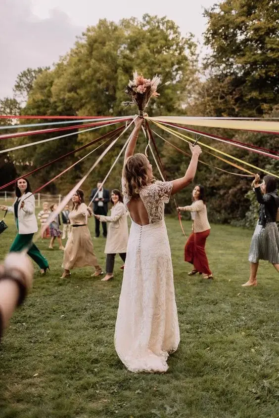

Les rubans dans le mariage laïque donne de grandes libertés pour la personnalisation du mariage. Parmi les nombreux rituels, le rituel des rubans, aussi appelé « handfasting », est l’un des plus symboliques et émouvants. Intégrer ce rituel dans une cérémonie de mariage laïque permet de créer un moment inoubliable et plein de signification, renforçant les promesses et les valeurs que les mariés souhaitent honorer tout au long de leur vie ensemble.
Origines et signification
Le « handfasting” est un ancien rituel issu des traditions celtiques, pratiqué lors des cérémonies de mariage païennes. Dans ces cultures, le fait de lier les mains des mariés avec des rubans ou des cordons symbolisait leur engagement mutuel et leur union spirituelle. Le terme « handfasting » vient de l’anglais ancien « hand-fæstung, » qui signifie « lier les mains. »
Traditionnellement, le rituel des rubans était utilisé pour marquer un engagement temporaire, souvent d’une durée d’un an et un jour, après quoi le couple pouvait décider de rendre leur union permanente ou de se séparer. Cela permettait aux couples de tester leur compatibilité avant de s’engager pour la vie.
Aujourd’hui, ce rituel est souvent intégré dans les cérémonies de mariage laïques ou païennes pour sa richesse symbolique. Ce rituel a une signification profonde : les rubans représentent les liens d’amour, de fidélité, de respect et de confiance qui unissent les mariés. Chaque ruban peut également être associé à une promesse ou à une valeur spécifique que les époux souhaitent honorer dans leur mariage.

Comment réaliser le rituel des rubans
Préparation des rubans
– Choisissez des rubans ou des cordons de différentes couleurs, chacune représentant une valeur ou une promesse spécifique (par exemple, le rouge pour la passion, le bleu pour la fidélité, le vert pour la prospérité).
– Vous pouvez utiliser de la soie, du satin ou tout autre matériau symbolique pour vous. Certains couples choisissent même des rubans brodés avec leurs noms ou la date de leur mariage pour une touche personnelle supplémentaire.
Introduction du rituel
– Le maître de cérémonie explique aux invités la signification du rituel des rubans et ce que chaque couleur représente.
– Les mariés peuvent également préparer un petit discours expliquant pourquoi ils ont choisi ce rituel et ce que chaque ruban signifie pour eux. Cela permet de partager avec leurs proches les valeurs et les promesses qu’ils jugent essentielles pour leur union.
Liaison des mains
– Les mariés se tiennent face à face et joignent leurs mains, formant un symbole d’infini avec leurs bras.
– Le maître de cérémonie, un proche ou les mariés eux-mêmes nouent les rubans autour de leurs mains jointes en prononçant des vœux ou des promesses.
– Chaque ruban est enroulé autour des mains et peut être attaché avec un nœud symbolique, représentant l’unité et l’engagement des époux.
– Une fois tous les rubans noués, le maître de cérémonie prononce une bénédiction ou un souhait pour le couple.
– Les mariés peuvent ensuite retirer délicatement les rubans et les conserver comme souvenir de leur engagement. Certains choisissent de les encadrer ou de les intégrer dans un album de mariage.
Conseils pratiques pour réussir le rituel des rubans
Préparation : Assurez-vous d’avoir suffisamment de rubans et de les disposer de manière à ce qu’ils soient facilement accessibles pendant la cérémonie.
Coordination : Si vous impliquez des proches dans le rituel, organisez une petite répétition pour qu’ils soient à l’aise avec leurs rôles.
Clarté : Expliquez clairement la signification de chaque ruban aux invités, soit à travers le maître de cérémonie, soit via un programme imprimé.
Personnalisation du rituel
L’un des grands avantages du mariage laïque est la possibilité de personnaliser chaque aspect de la cérémonie. Voici quelques idées pour adapter le rituel des rubans à votre mariage :
Impliquer les Invités
Invitez des proches ou des membres de la famille à nouer les rubans et à prononcer des vœux ou des bénédictions. Cela peut rendre la cérémonie encore plus personnelle et inclusive, en permettant à vos êtres chers de participer activement à ce moment spécial.
Rubans Personnalisés
Utilisez des rubans brodés avec vos noms, une date spéciale ou des mots significatifs. Vous pouvez également choisir des rubans de différentes textures ou motifs pour représenter les différentes facettes de votre relation.
Thèmes et Couleurs
Adaptez les couleurs des rubans à votre thème de mariage ou à des éléments culturels qui vous sont chers. Par exemple, vous pouvez choisir des couleurs qui ont une signification particulière dans votre culture ou votre histoire personnelle.
Exemples de signification des couleurs de rubans
Chaque couleur de ruban peut avoir une signification particulière. Voici quelques exemples courants :
Rouge
Passion, amour, courage
Bleu
Fidélité, confiance, paix
Vert
Prospérité, santé, chance
Jaune
Joie, bonheur, optimisme
Blanc
Pureté, sincérité, simplicité
Violet
Spiritualité, mystère, noblesse
Orange
Énergie, créativité, enthousiasme
Rose
Romance, douceur, tendresse
Les mariés peuvent choisir les couleurs qui résonnent le plus avec eux et leur histoire d’amour, rendant ainsi le rituel encore plus significatif.
En bref...
Le rituel des rubans est une manière magnifique et significative de symboliser l’union et les promesses échangées lors d’un mariage laïque. En intégrant cette tradition ancienne à votre cérémonie, vous créez non seulement un moment émouvant mais aussi un souvenir tangible de votre engagement mutuel. Que vous choisissiez de suivre les traditions anciennes ou d’y ajouter votre touche personnelle, ce rituel apportera une dimension supplémentaire de beauté et de profondeur à votre mariage.
La flexibilité et la personnalisation offertes par le rituel des rubans permettent aux mariés de créer une cérémonie unique et profondément significative. Que ce soit par le choix des couleurs, l’implication des invités ou la symbolique des promesses, chaque aspect du rituel peut être adapté pour refléter les valeurs et l’histoire des mariés, faisant du handfasting un élément inoubliable de leur journée spéciale.